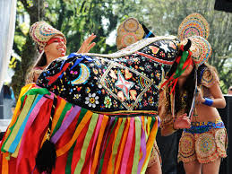
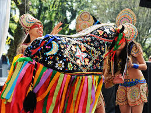

Bumba Meu Boi
O Bumba Meu Boi é a manifestação cultural mais conhecida do Maranhão, misturando teatro, música e dança em uma celebração colorida e animada.
O Bumba Meu Boi é a manifestação cultural mais conhecida do Maranhão, misturando teatro, música e dança em uma celebração colorida e animada.
O Tambor de Crioula é uma expressão cultural afro-brasileira com dança circular, cantos e percussão de tambores.
A culinária maranhense tem influências indígenas, africanas e portuguesas. Destaque para: